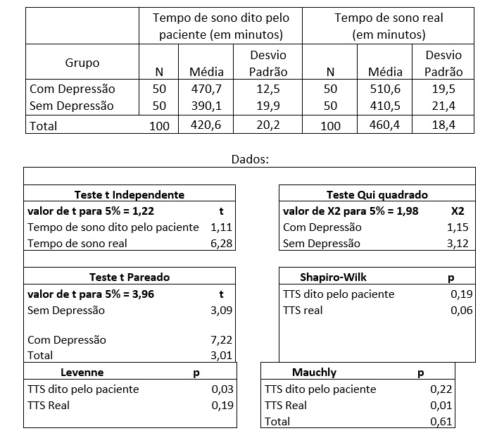
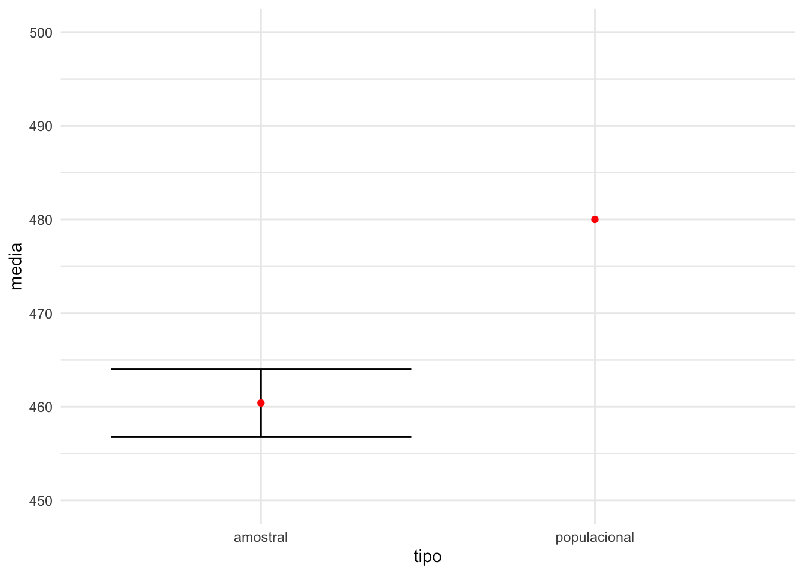
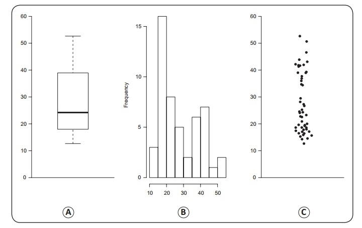
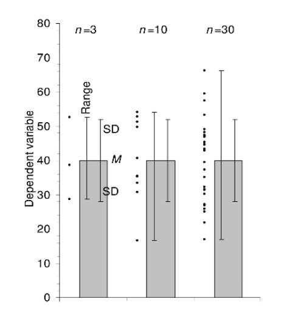
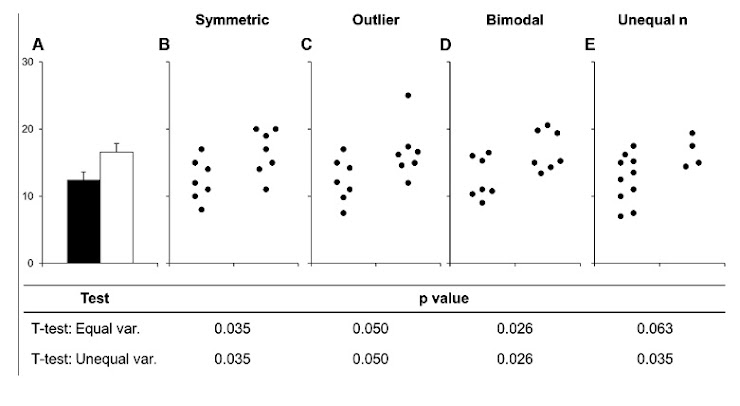
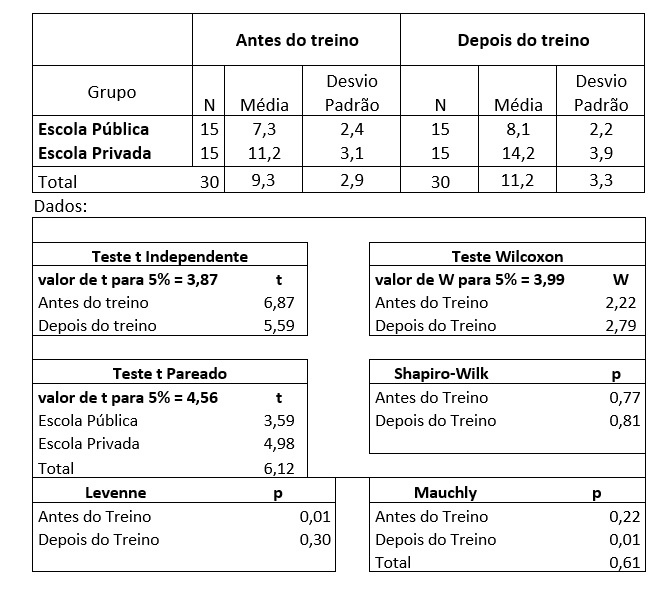
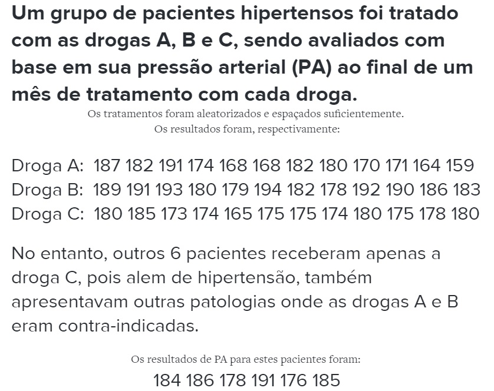
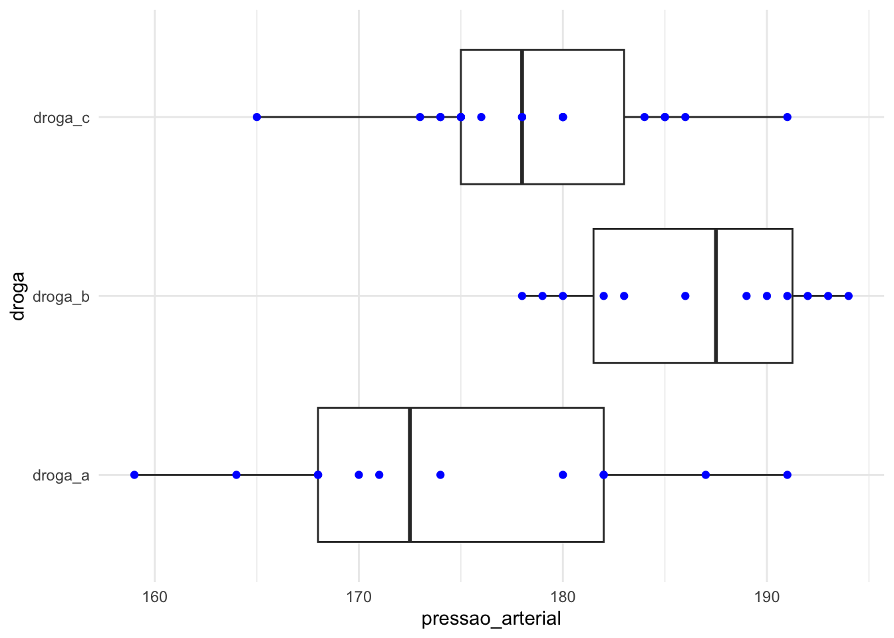
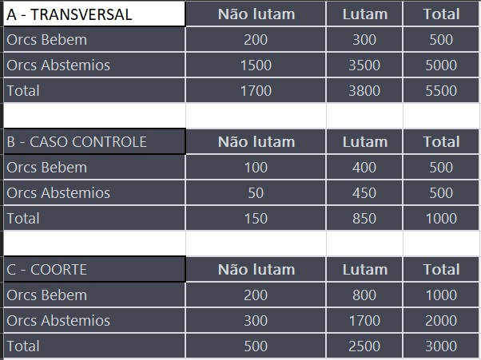

Prova 1
Estatística aplicada à psicobiologia I
Informações sobre a prova
Para cada questão, selecione o teste estatístico correto, as Variáveis Dependentes e Independentes caso existam e faça um parágrafo descrevendo os resultados encontrados com as notações específicas e também destacando aonde está a diferença significante, caso ela exista.
Para todas as análises, adote nível de significancia de 5%
Questões de 1 a 5
Os dados abaixo representam os Tempos Totais de Sono de 100 pacientes, declarado pelo paciente e medido por um teste real, chamado polissonografia.
O objetivo era verificar se pacientes sem depressão (50) ou com depressão (50) têm uma boa percepção em relação ao tempo que de fato permanecem dormindo. NÃO É PARA FAZER CONTA ALGUMA, UTILIZE AS INFORMAÇÕES DA TABELA ABAIXO!

Questão 1
1 - Existe diferença estatística entre os grupos com depressão e sem depressão em função do tempo de sono dito pelo paciente?
Variável independente: Grupo (variável categórica, com 2 categorias: com depressão/sem depressão).
Variável dependente: TTS dito pelo paciente (em minutos, variável numérica). Essa variável tem distribuição próxima à normal segundo o teste de Shapiro-Wilk, mas não apresenta homogeneidade das variâncias segundo o teste de Levenne.
O teste escolhido foi o teste t independente. Nesse caso, é importante realizar a correção de Welch devido à não-homogeneidade das variâncias.
A estatística T encontrada foi de 1,11, sendo menor que o valor crítico (T=1,22) para considerar o valor p < 0.05. Portanto, não temos evidências para apontar que existe diferença estatística entre os grupos (depressão/sem depressão) em função do tempo de sono real medido para os pacientes.
Questão 2
2 - Existe diferença estatística entre os grupos com depressão e sem depressão em função do tempo de sono real medido pela polissonografia?
Variável independente: Grupo (variável categórica, com 2 categorias: com depressão/sem depressão).
Variável dependente: TTS real (em minutos, variável numérica). Essa variável tem distribuição próxima à normal segundo o teste de Shapiro-Wilk, e apresenta homogeneidade das variâncias segundo o teste de Levenne.
O teste escolhido foi o teste t independente.
A estatística T encontrada foi de 6,28, sendo maior que o valor crítico (T=1,22) para considerar o valor p < 0.05. Portanto, existe diferença estatística entre os grupos (depressão/sem depressão) em função do tempo de sono real medido para os pacientes.
Questão 3
3 - Existe diferença estatística entre o tempo de sono dito pelo paciente e o tempo de sono real para as pessoas com depressão?
Variável independente: categoria de TTS (variável categórica, com 2 categorias: TTS dito pelo paciente/TTS real).
Variável dependente: tempo em minutos (em minutos, variável numérica).
Neste caso, consideramos apenas o grupo de pessoas com depressão, e utilizamos um teste-t pareado.
Como se trata de um teste de medidas repetidas, é importante checar a esfericidade, o que pode ser verificado com o teste de Mauchly. Como não temos a informação considerando apenas para pessoas com depressão, considerei o valor total, que apresentou esfericidade (p = 0,61).
O resultado obtido foi T=7,22, sendo maior que o valor crítico (T=3,96) para considerar o valor p < 0.05.
Portanto, para as pessoas com depressão, existe diferença estatística entre o tempo de sono dito pelo paciente e o tempo de sono real para os pacientes com depressão.
Questão 4
4 - Existe diferença estatística entre o tempo de sono dito pelo paciente e o tempo de sono real para as pessoas sem depressão?
Variável independente: categoria de TTS (variável categórica, com 2 categorias: TTS dito pelo paciente/TTS real).
Variável dependente: tempo em minutos (em minutos, variável numérica).
Neste caso, consideramos apenas o grupo de pessoas sem depressão, e utilizamos um teste-t pareado.
Como se trata de um teste de medidas repetidas, é importante checar a esfericidade, o que pode ser verificado com o teste de Mauchly. Como não temos a informação considerando apenas para pessoas sem depressão, considerei o valor total, que apresentou esfericidade (p = 0,61).
O resultado obtido foi T=3,09, sendo menor que o valor crítico (T=3,96) para considerar o valor p < 0.05.
Portanto, para as pessoas com depressão, não existe diferença estatística entre o tempo de sono dito pelo paciente e o tempo de sono real para os pacientes com depressão.
Questão 5
5 - Supondo que pessoas em geral costumam dormir em média 8 horas por noite (480 minutos), podemos dizer que toda nossa amostra (independentemente da presença de depressão ou não) possui valor médio semelhante de tempo total de sono real em relação a média esperada populacional?
Média amostral = 460,4
Média populacional = 480
Vou calcular o intervalo de confiança da média amostral:
Código
| media | tipo | media_min | media_max |
|---|---|---|---|
| 460.4 | amostral | 456.7936 | 464.0064 |
| 480.0 | populacional | NA | NA |
Código
tab_media |>
ggplot(aes(x = tipo, y = media)) +
geom_errorbar(aes(ymin = media_min, ymax = media_max)) +
geom_point(color = "red") +
theme_minimal() +
scale_y_continuous(limits = c(450, 500))
Podemos dizer que toda nossa amostra (independentemente da presença de depressão ou não) possui valor médio semelhante de tempo total de sono real em relação a média esperada populacional?
Não é semelhante
A amostra possui valor médio de sono menor do que a média populacional
p-valor?
Alternativas:
Sim com p menor que 5%. A amostra possui valor médio de sono semelhante a média populacional
Sim com p maior que 5%. A amostra possui valor médio de sono maior do que a média populacional
Não com p maior que 5%. A amostra possui valor médio de sono semelhante a média populacional
Sim com p maior que 5%. A amostra possui valor médio de sono menor do que a média populacional
Não temos informações suficientes
Questões 6 e 7
Uma empresa farmaceutica chamada OH desenvolveu um novo produto voltado para redução da azia. O departamento de pesquisa dessa marca resolveu fazer uma coleta de dados para verificar aeficácia percebida na redução da azia. O estudo foi feito e isso motivou a inclusão de uma frase no rótulo do produto, a saber: “Antiácido: Reduz a Azia em 93%*”. Na parte de trás do rótulo temos uma informação que é relacionado com o asterisco apresentado no slogan Resultado com base em uma pesquisa de percepção de uso com 16 voluntários. Com base nas informações acima, responda as perguntas 6 e 7 abaixo:
Questão 6
6 - Calcule o intervalo em torno da proporção de pessoas que relataram ter sua azia reduzida com 99% de confiança (z=3). Podemos dizer que este resultado encontrado (93%) é fidedigno e reprodutível?
Vamos calcular o intervalo de confiança para proporções:
Código
n_pesquisa_antiacido = 16
z = 3 # 99% de confiança
prop_encontrada_pesquisa_antiacido = 0.93Código
# p * (1-p)
parte_1 <- prop_encontrada_pesquisa_antiacido*(1 - prop_encontrada_pesquisa_antiacido)
# p * (1-p)/n
parte_2 <- parte_1/n_pesquisa_antiacido
# sqrt(p * (1-p)/n)
parte_3 <- sqrt(parte_2)
# z * sqrt(p * (1-p)/n)
parte_4 <- z * parte_3
ic_pesquisa_antiacido <- c(prop_encontrada_pesquisa_antiacido-parte_4, prop_encontrada_pesquisa_antiacido+parte_4)
round(ic_pesquisa_antiacido*100)[1] 74 112O Intervalo de confiança encontrado foi entre 74% e 112%.
Código
round((ic_pesquisa_antiacido[2]-ic_pesquisa_antiacido[1])*100)[1] 38Faixa de erro: 38%. Muito erro!!!
O que 112% de proporção significa? Não faz sentido ter proporção maior que 100%?
O que o professor quer dizer com resultado fidedigno e reprodutível? Acredito que dependa do erro aceitável. Isso não está escrito na questão.
Alternativas:
O resultado 93% - IC95% [74-112%] é fidedigno e reprodutível com base no Intervalo de Confiança
O resultado 93% - IC95% [74-112%] não é fidedigno e reprodutível com base no Intervalo de Confiança
O resultado 93% - IC95% [74-100%] é fidedigno e reprodutível com base no Intervalo de Confiança
O resultado 93% - IC67% [74-100%] é fidedigno e reprodutível com base no Intervalo de Confiança
Questão 7
7- Caso a empresa faça uma nova pesquisa onde foi encontrada a mesma proporção de pessoas com redução de caspa conforme o rótulo, com o mesmo nível de significancia de 99%, erro total esperado máximo de 1%, calcule qual seria o tamanho de amostra necessário para este novo estudo?
Código
# n_caspa = ?
z = 3 # 99% de confiança
prop_reducao_caspa = 0.93
erro_total_max = 0.01Segundo anotações do caderno: n = z^2 * DP^2 / erro^2
Consideramos que DP = sqrt(p * (1-p))
Código
DP_caspa = sqrt(prop_reducao_caspa * (1-prop_reducao_caspa))Calculando o n:
Código
n_caspa = ((z ^2) * (DP_caspa ^2)) / (erro_total_max ^ 2)
n_caspa[1] 5859Respondi: 5859
Questões 8 a 10
Questão 8
8- A figura abaixo representa 3 formas (A - boxplot, B - histograma, C - dotplot) de descrever o mesmo conjunto de dados (N=30). Existe diferença na interpretação dos dados por meio da análise de diferentes gráficos, mesmo utilizando os mesmos dados? Faça uma descrição detalhada das limitações e vantagens de cada apresentação gráfica:

As três representações permitem obter informações da distribuição dessa variável (chamada aqui de conjunto de dados):
Boxplot: É uma forma mais sintética de ver a distribuição dos dados, permitindo ver a mediana e quartis.
Histograma: Apresenta a distribuição dos dados com mais detalhes que o Boxplot, porém representados em faixas. Não apresenta medidas como mediana e quartis.
Dotplot: Apresenta todos os valores do conjunto de dados. Não apresenta medidas como mediana e quartis.
Existe diferença na interpretação dos gráficos:
A - O boxplot possibilita visualizar os quartis da variável. Conseguimos ver que a mediana da variável é próxima de 25.
B - O histograma possibilita visualizar a distribuição da variável. Conseguimos ver que a maior frequência dos valores estão entre 15 e 20. É possível ver que a distribuição tem dois pontos de concentração dos dados.
C - O dotplot permite ver cada um dos valores do conjunto de dados, e permite ver a concentração de dados entre os valores 10 e 20. É possível ver que a distribuição tem dois pontos de concentração dos dados.
Questão 9
9- O gráfico abaixo mostra 3 grupos de dados com tamanhos de amostra diferentes (3, 10 e 30, respectivamente). Responda qual a opção CORRETA.

Alternativas:
A barra de amplitude sempre pode excluir valores individuais. FALSO: A amplitude é calculada a partir dos valores mínimo e máximo.
Podemos ter médias semelhantes para grupos com tamanhos de amostra diferentes, mas o desvio padrão é diferente dependendo do tamanho da amostra. FALSO: creio que o problema é o final da frase. O desvio padrão pode ser diferente, mas não necessariamente.
Quanto maior o tamanho da amostra, maior é o desvio padrão, independentemente do valor do tamanho da amostra. FALSO: podemos ter uma variável que mesmo com grande n apresenta um baixo desvio padrão, se ela tiver pouca variabilidade.
Gráficos de barra são os melhores para mostrar a variabilidade entre grupos em relação a gráficos como boxplot. FALSO: Os gráficos de barra não representam bem a variabilidade.
Intervalo de confiança não leva em conta o tamanho da amostra em seu cálculo. FALSO: utilizamos o n para calcular o IC.
Questão 10
O gráfico acima mostra dados de dois grupos apresentados como um gráfico de barras (a esquerda). Além disso, foram simuladas 4 tipos de distribuição diferentes dos supostos dados e apresentados como gráficos de pontos (grupos simétricos, com outlier em um dos grupos, com amostras bimodais e com N desiguais). Logo abaixo são apresentados dados referentes a testes t independentes realizados em cada uma das condições, tendo os valores de p apresentados.

10 - Com base na figura e nas informações acima, diga qual a alternativa CORRETA:
Questões de 11 a 14
Em um estudo foram avaliadas 30 crianças, sendo 15 de escolas públicas e 15 de escolas particulares. Todas elas foram submetidas a um teste de memória em dois momentos (antes e depois de um treino de motricidade). Os dados abaixo mostram os resultados das crianças em função do número de palavras lembradas.
NÃO É PARA FAZER CONTA ALGUMA, UTILIZE AS INFORMAÇÕES DA TABELA ABAIXO!

Questão 11
11 - Existe diferença entre Escolas Públicas e Privadas na média de palavras lembradas antes do treino de motricidade?
A variável independente é o tipo de escola (pública/privada). Portanto é uma variável categórica, com 2 categorias.
A variável dependente é a quantidade de palavras lembradas antes do treino de motrocidade. Essa variável apresenta distribuição próxima à normal (baseado nos resultados do teste Shapiro-Wilk, p = 0.77), porém não apresenta homogeneidade das variâncias (baseado nos resultados do teste de Levenne, p = 0.01).
Podemos usar o teste-t independente, um teste paramétrico. Nesse caso, é importante realizar a correção de Welch devido à não-homogeneidade das variâncias.
Os resultados do teste-t independente (t = 6,87) apontam que existe diferença entre os grupos (escola pública e escola privada) na média de palavras lembradas antes do treino de motrocidade.
Questão 12
12 - Existe diferença entre Escolas Públicas e Privadas na média de palavras lembradas depois do treino de motricidade?
A variável independente é o tipo de escola (pública/privada). Portanto é uma variável categórica, com 2 categorias.
A variável dependente é a quantidade de palavras lembradas depois do treino de motrocidade. Essa variável apresenta distribuição próxima à normal (baseado nos resultados do teste Shapiro-Wilk, p = 0.81), e apresenta homogeneidade das variâncias (baseado nos resultados do teste de Levenne, p = 0.30).
Podemos usar o teste t-independente, um teste paramétrico.
Os resultados do teste t independente (T = 5,59) apontam que existe diferença entre os grupos (escola pública e escola privada) na média de palavras lembradas depois do treino de motrocidade.
Questão 13
13 - Existe diferença entre o número de palavras lembradas antes e depois do treino para a Escola Privada?
A variável independente é o tempo: antes ou depois do treino. Portanto é uma variável categórica, com 2 categorias.
A variável dependente é a quantidade de palavras lembradas.
Considerando apenas as crianças de escola privada:
Podemos usar o teste t-pareado.
Como se trata de um teste de medidas repetidas, é importante checar a esfericidade, o que pode ser verificado com o teste de Mauchly. Como não temos a informação considerando apenas para crianças de escolas privadas, considerei o valor total, que apresentou esfericidade (p = 0,61).
Os resultados do teste t pareado (T = 4,98) apontam que existe diferença entre os tempos (antes e depois do treino) na média de palavras lembradas pelas crianças.
Questão 14
14 - Existe diferença entre o número de palavras lembradas antes e depois do treino para a Escola Pública?
A variável independente é o tempo: antes ou depois do treino. Portanto é uma variável categórica, com 2 categorias.
A variável dependente é a quantidade de palavras lembradas.
Considerando apenas as crianças de escola pública:
Podemos usar o teste t-pareado.
Como se trata de um teste de medidas repetidas, é importante checar a esfericidade, o que pode ser verificado com o teste de Mauchly. Como não temos a informação considerando apenas para crianças de escolas públicas, considerei o valor total, que apresentou esfericidade (p = 0,61).
Os resultados do teste t pareado (T = 3,59) apontam que não existe diferença entre os tempos (antes e depois do treino) na média de palavras lembradas pelas crianças.
Questões 15 a 20
Questão 15
O Banco de dados para responder a questão abaixo pode ser encontrado aqui: https://bit.ly/2XC89jN
Código
dados_hipertensao <- readr::read_delim("Hipertensao.csv",
delim = ";", escape_double = FALSE, trim_ws = TRUE)
dplyr::glimpse(dados_hipertensao)Rows: 18
Columns: 4
$ PACIENTE <chr> "P1", "P2", "P3", "P4", "P5", "P6", "P7", "P8", "P9", "P10",…
$ `DROGA A` <dbl> 187, 182, 191, 174, 168, 168, 182, 180, 170, 171, 164, 159, …
$ `DROGA B` <dbl> 189, 191, 193, 180, 179, 194, 182, 178, 192, 190, 186, 183, …
$ `DROGA C` <dbl> 180, 185, 173, 174, 165, 175, 175, 174, 180, 175, 178, 180, …Código
hipertensao <- dados_hipertensao |>
janitor::clean_names() |>
tidyr::pivot_longer(cols = -paciente, names_to = "droga", values_to = "pressao_arterial")
15- Faça as análises estatísticas que julgar necessárias para verificar qual é o melhor tratamento. Faça um texto com as suas análises passo a passo e escreva sua conclusão como o faria para submeter um artigo para publicação. ESCREVA UM PARÁGRAFO DE ANÁLISE ESTATÍSTICA (Como na seção de métodos de um artigo) ONDE DEVEM SER APRESENTADAS - Qual a pergunta de pesquisa, VD e VI, Hipótese Nula e Alternativa e os testes estatísticos adotados e seus pré-requisitos caso seja necessário. ALÉM DISSO ESCREVA OUTRO PARÁGRAFO COM A ANÁLISE DOS DADOS - Resultados, notação dos testes, onde estão as diferenças entre os grupos/medidas e tamanhos do efeito. Utilize esse exercício como um treino para escrever seus próprios resultados daqui pra frente! Utilize o banco de dados apresentado no link acima. Fique a vontade para adicionar mais variáveis caso ache necessário
Código
hipertensao# A tibble: 54 × 3
paciente droga pressao_arterial
<chr> <chr> <dbl>
1 P1 droga_a 187
2 P1 droga_b 189
3 P1 droga_c 180
4 P2 droga_a 182
5 P2 droga_b 191
6 P2 droga_c 185
7 P3 droga_a 191
8 P3 droga_b 193
9 P3 droga_c 173
10 P4 droga_a 174
# ℹ 44 more rowsCódigo
min(hipertensao$pressao_arterial, na.rm = TRUE)[1] 159Código
max(hipertensao$pressao_arterial, na.rm = TRUE)[1] 194Código
shapiro.test(hipertensao$pressao_arterial)
Shapiro-Wilk normality test
data: hipertensao$pressao_arterial
W = 0.97791, p-value = 0.5819Código
car::leveneTest(hipertensao$pressao_arterial ~ hipertensao$droga)Levene's Test for Homogeneity of Variance (center = median)
Df F value Pr(>F)
group 2 2.6326 0.08463 .
39
---
Signif. codes: 0 '***' 0.001 '**' 0.01 '*' 0.05 '.' 0.1 ' ' 1Código
hipertensao |>
ggplot() +
aes(x = pressao_arterial, y = droga) +
geom_boxplot() +
geom_point(color = "blue") +
theme_minimal()
# A tibble: 2 × 6
term df sumsq meansq statistic p.value
<chr> <dbl> <dbl> <dbl> <dbl> <dbl>
1 droga 2 869. 434. 8.31 0.000988
2 Residuals 39 2040. 52.3 NA NA - Materiais e métodos: Análise estatística
Nesta pesquisa, buscamos responder a seguinte pergunta: Qual medicamento (droga A, B ou C) apresenta o melhor tratamento para a hipertensão (ou seja, apresenta maior diminuição de pressão arterial)?
A variável independente é a droga utilizada para o tratamento (droga A, B ou C). É uma variável categórica nominal.
A variável dependente é a pressão arterial, uma variável numérica discreta, apresentando valores entre 159 e 194.
A hipótese nula é de que a média da pressão arterial (Mpa) para a droga A é igual à Mpa para a droga B, e igual para a Mpa para a droga C:
Mpa_drogaA = Mpa_drogaB = Mpa_drogaC
A hipótese alternativa é de que as médias da pressão arterial são diferente entre os grupos:
Mpa_drogaA != Mpa_drogaB != Mpa_drogaC
O teste de Shapiro-Wilk foi utilizado para testar a normalidade da variável dependente (pressão arterial). O resultado apontou para a normalidade da variável (p-valor = 0.58).
O teste de Levenne foi utilizado para testar se existe homogeneidade das variâncias para a variável dependente. O resultado apontou que existe homogeneidade das variâncias (p-valor = 0.08).
Portanto, teste estatístico escolhido foi a ANOVA (análise de variância).
As análises de dados foram realizas utilizando o software R (R Core Team, 2024), e os seguintes pacotes: stats (R Core Team, 2024), car (Fox & Weisberg, 2019), tidyverse (Wickham et al., 2019).
- Resultados: Análise dos dados
A análise de variância apresentou F = 8.3, com p-valor < 0.05, o que aponta que existe uma diferença significativa entre os grupos.
Para encontrar quais são os grupos com diferenças significativas, foi realizado um teste post-hoc:
- Referências
Fox J, Weisberg S (2019). An R Companion to Applied Regression, Third edition. Sage, Thousand Oaks CA. https://socialsciences.mcmaster.ca/jfox/Books/Companion/.
R Core Team (2024). R: A Language and Environment for Statistical Computing. R Foundation for Statistical Computing, Vienna, Austria. https://www.R-project.org/.
Wickham H, Averick M, Bryan J, Chang W, McGowan LD, François R, Grolemund G, Hayes A, Henry L, Hester J, Kuhn M, Pedersen TL, Miller E, Bache SM, Müller K, Ooms J, Robinson D, Seidel DP, Spinu V, Takahashi K, Vaughan D, Wilke C, Woo K, Yutani H (2019). “Welcome to the tidyverse.” Journal of Open Source Software, 4(43), 1686. doi:10.21105/joss.01686 https://doi.org/10.21105/joss.01686.
Questão 16
16 - Qual das seguintes afirmações é VERDADEIRA sobre gráficos de barra e boxplots?
Questão 17
17- Qual das seguintes afirmações é VERDADEIRA sobre por que o teste ANOVA é preferível ao teste t para comparar médias em mais de 2 grupos?
O teste t é mais apropriado para dados com distribuição normal, enquanto o ANOVA é mais robusto a desvios da normalidade.
O teste t pode ser utilizado para comparar diferentes variáveis de resposta, enquanto o ANOVA é limitado a um único fator de interesse.
O teste t é mais fácil de interpretar, enquanto a interpretação do ANOVA é mais complexa.
O teste t não requer homogeneidade de variâncias, enquanto o ANOVA exige que as variâncias entre os grupos sejam iguais.
O teste t é mais adequado para amostras grandes, enquanto o ANOVA é apropriado para amostras pequenas e grandes.
Questão 18
18- Qual das seguintes afirmações é VERDADEIRA sobre a relação entre tamanho de efeito e tamanho de amostra?
Quanto maior o tamanho da amostra, maior o tamanho do efeito.
O tamanho do efeito é independente do tamanho da amostra.
O tamanho do efeito é diretamente proporcional ao tamanho da amostra apenas em experimentos controlados.
O tamanho do efeito é diretamente proporcional ao tamanho da amostra apenas em experimentos observacionais.
Questão 19
19- Qual das seguintes afirmações é VERDADEIRA sobre o uso de intervalos de confiança para comparar diferenças entre um grupo em dois momentos diferentes no tempo?
Intervalos de confiança são mais úteis para comparar grupos independentes do que grupos pareados.
O tamanho do intervalo de confiança é influenciado apenas pelo tamanho da amostra e não pela magnitude da diferença entre os momentos.
Intervalos de confiança não fornecem informações sobre a direção da diferença entre os momentos, apenas sobre a magnitude da diferença.
Questão 20
20- Era uma vez um guerreiro chamado Aragorn, que vivia em um reino ameaçado por um exército de Orcs liderados por um temível inimigo chamado Sauron. Aragorn sabia que a única maneira de vencer Sauron e salvar o reino era descobrir uma fraqueza em seu exército e explorá-la.
Aragorn sabia que Sauron era um grande consumidor de bebidas alcoólicas, então ele decidiu estudar os efeitos do álcool na saúde dos Orcs. Ele recrutou uma equipe de pesquisadores e coletou dados sobre a exposição dos Orcs ao álcool e a ocorrência de doenças em um determinado período.
Aragorn quer usar essas informações para desenvolver uma estratégia de batalha. Caso exista associações interessantes, ele ordenará que seus soldados atacassem os barris de cerveja e vinho dos Orcs durante a noite, com a esperança de reduzir sua capacidade de lutar no dia seguinte. Ele quer saber se os Orcs que não bebem alcool antes da batalha, não conseguem lutar.
O serviço de inteligência de Aragorn trouxe os dados A, B e C
A- Estudo Transversal da população de Orcs do império de Sauron feita com uso de espiões infiltrados
B- Estudo Caso Controle retrospectivo de dados de Orcs capturados em batalhas anteriores.
C- Estudo Longitudinal feito a partir de prisioneiros de guerra Orcs.
Olhando os dados das tabelas A,B,C e fazendo os calculos necessários das medidas de associação, é possível dizer que se Aragorn planejar sua estratégia de batalha baseado em ordenar que seus soldados ataquem os barris de cerveja e vinho dos Orcs durante a noite, com a esperança de reduzir sua capacidade de lutar no dia seguinte, será bem sucedido?
Justifique com base nos valores calculados e diga se os dados epidemiológicos podem ser valorizados como uma ferramenta valiosa na luta contra as ameaças à saúde do reino de Aragorn.

A) Estudo transversal
B) Estudo Caso-controle
C) Coorte
Resposta
É possível dizer que se Aragorn planejar sua estratégia de batalha baseado em ordenar que seus soldados ataquem os barris de cerveja e vinho dos Orcs durante a noite, com a esperança de reduzir sua capacidade de lutar no dia seguinte, será bem sucedido?
Será que a bebida AJUDA os orcs a lutarem melhor?
Neste caso, consideramos que a exposição é beber ou não, e o desfecho é lutar ou não lutar.
Exposto (Orcs Bebem) - Desfecho: lutam | Exposto (Orcs Bebem) - Desfecho: não lutam ________________________________________________________________________________ Não-exposto (Orcs abstêmios) - Desfecho: lutam | Não-exposto (Orcs não bebem) - Desfecho: não lutam
Com os resultados do estudo transversal, podemos calcular a razão de prevalências:
Prevalência de Orcs que não lutam, dentre os expostos (beberam) = 200 / 200+300 = 0.4
Prevalência de Orcs que não lutam, dentre os não-expostos (abstêmios) = 1500 / 1500+3500 = 0.3
Razão de prevalências: 0.4/0.3 = 1.33
Esse resultado aponta que existe associação entre desfecho “não lutar” e a exposição ao álcool. A interpretação dos resultados sugere que existe mais Orcs que não lutam quando são expostos (bebem).
Com os resultados do estudo caso-controle, podemos calcular a razão de chances (odds-ratio).
O que eu espero? Que Orcs que bebem, lutem. E que os Orcs que não bebem, não lutem.
Chance de acontecer o que eu espero: orcs_bebem_lutam * orcs_abstemios_nao_lutam = 400 * 50 = 20000
Chance de acontecer o que eu NÃO espero: orcs_bebem_nao_lutam * orcs_abstemios_lutam = 100 * 450 = 45000
Razão de chances: 20000/45000 = 20/45 = 0.44
Interpretação: existe uma associação - não espero. MELHORAR ISSO
Entendo que existe uma chance maior de orcs que bebem não lutarem, e orcs abstêmios lutarem.
Com os resultados do Coorte, podemos calcular a razão de incidência (risco relativo):
Incidência dos orcs que “NÃO LUTAM” dentre os expostos: 200/200+800 = 0.2
Incidência dos orcs que “NÃO LUTAM” dentre os não-expostos: 300/300+1700 = 0.15
Razão de incidência = 0.2 / 0.15 = 1.333
A interpretação é: existem mais Orcs que não lutam quando são expostos ao alcool.
Respondendo a pergunta: Se Aragorn planejar sua estratégia de batalha baseado em ordenar que seus soldados ataquem os barris de cerveja e vinho dos Orcs durante a noite, com a esperança de reduzir sua capacidade de lutar no dia seguinte, será bem sucedido?
Links que podem ser úteis:
Apostila sobre bioestatística: https://www.fcav.unesp.br/Home/departamentos/cienciasexatas/alanrodrigopanosso/apostila_bioestatistica_2019.pdf
Apostila curta sobre intervalo de confiança: https://midia.atp.usp.br/plc/plc0503/impressos/plc0503_04.pdf
Interpretação do boxplot: https://fernandafperes.com.br/blog/interpretacao-boxplot/